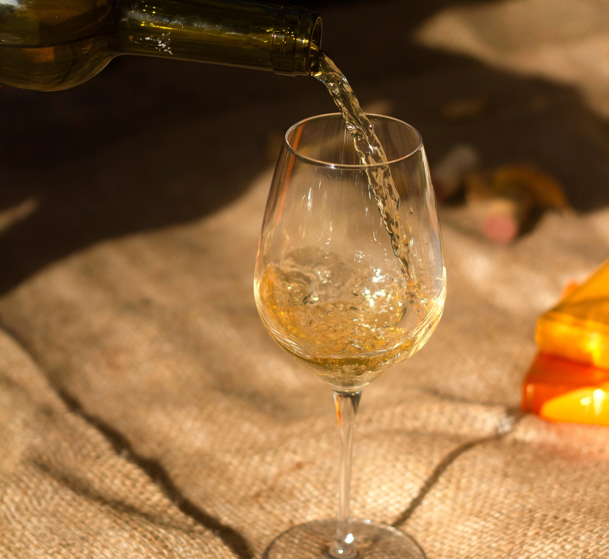
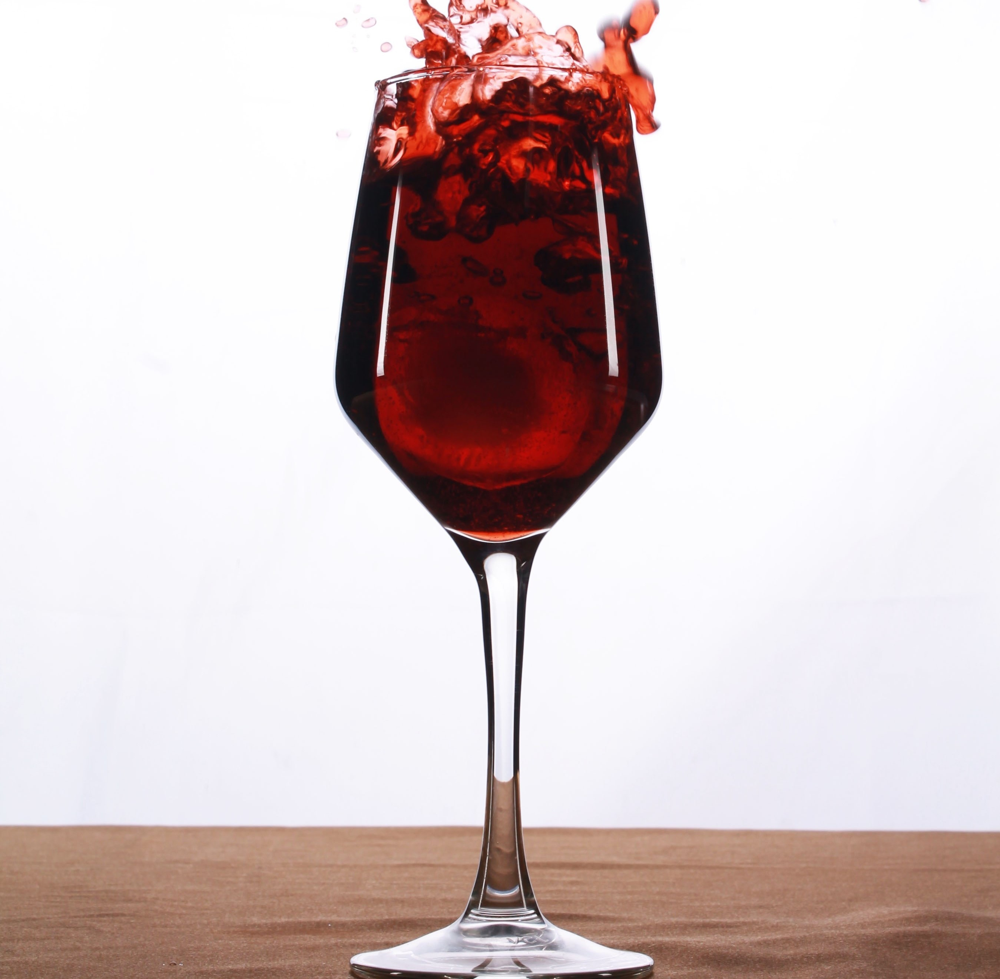
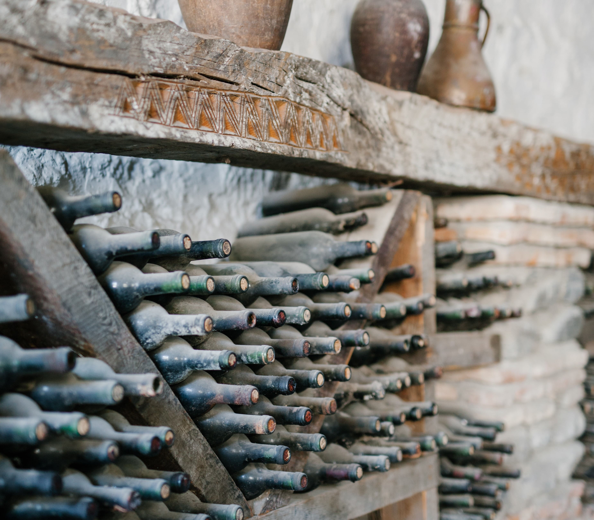
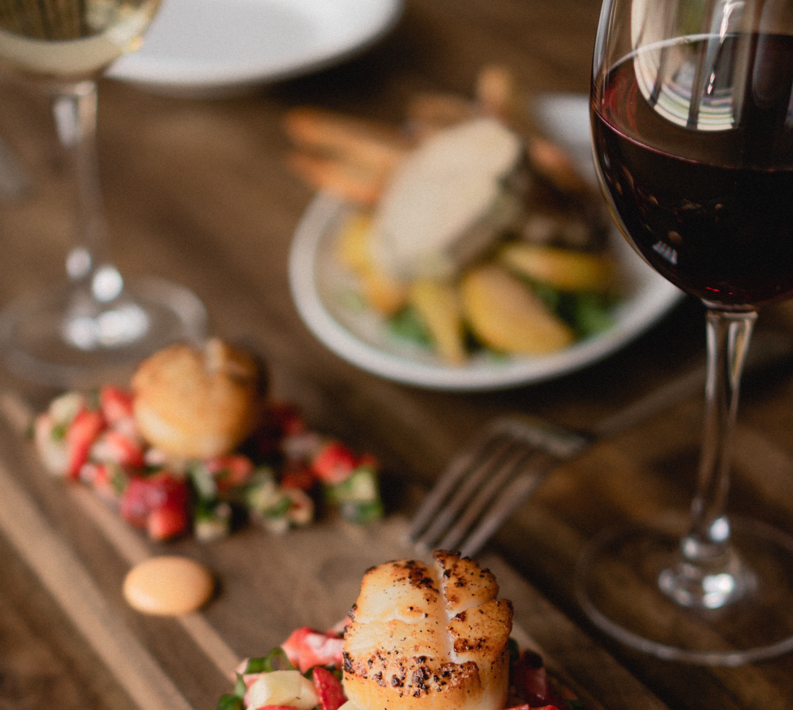

Tipos de vinos
Vino tinto
Los vinos tintos se elaboran con uvas rojas o tintas. El color rojo proviene de los pigmentos que se encuentran en la piel de la uva. Los vinos tintos suelen ser ricos y complejos, con sabores a frutos rojos, bayas, especias y madera. Algunos de los vinos tintos más populares incluyen Cabernet Sauvignon, Merlot, Pinot Noir, Shiraz y Zinfandel.
Vino blanco
Los vinos blancos se elaboran con uvas blancas. Los vinos blancos suelen ser más ligeros y refrescantes que los vinos tintos, con sabores a frutas cítricas, flores y hierbas. Algunos de los vinos blancos más populares incluyen Sauvignon Blanc, Chardonnay, Riesling, Pinot Grigio y Viognier.
Vino rosado
Los vinos rosados se elaboran con uvas tintas, pero se fermentan durante un período de tiempo más corto, lo que permite que menos del color de la piel de la uva se transfiera al vino. Los vinos rosados suelen ser ligeros y refrescantes, con sabores a fresas, frambuesas y cerezas. Algunos de los vinos rosados más populares incluyen Rosé d'Anjou, Rosé de Provence y Rosé de Sangiovese.
Vino espumoso
Los vinos espumosos son vinos que contienen dióxido de carbono, lo que les da un sabor burbujeante. Los vinos espumosos pueden ser blancos, rosados o tintos. Algunos de los vinos espumosos más populares incluyen Champagne, Prosecco, Cava y Sparkling Rosé.
Vino fortificado
Los vinos fortificados son vinos a los que se les ha añadido alcohol, lo que aumenta su contenido alcohólico. Los vinos fortificados suelen ser dulces y se sirven como postre. Algunos de los vinos fortificados más populares incluyen Sherry, Port, Madeira y Marsala.
Vinos del Nuevo Mundo
Los vinos del Nuevo Mundo se refieren a los vinos producidos en regiones vitivinícolas fuera de Europa, como América, Australia, Sudáfrica y Nueva Zelanda. Estos vinos a menudo tienen estilos únicos y expresivos, con sabores audaces y modernos. Explora la diversidad de los vinos del Nuevo Mundo y descubre nuevas experiencias en cada copa.
